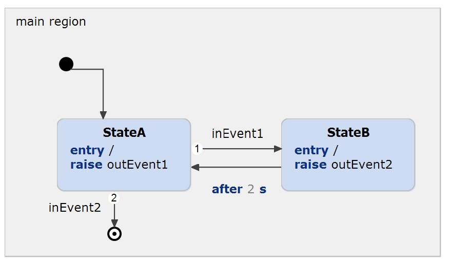

Embedded Systems Integration Guide - Arduino with @CycleBased or @EventDriven execution using Polling.
This example has been created to illustrate how an Arduino can be programmed using @CycleBased or @EventDriven execution and polling. You can find a detailed description in our documentation.
The state machine contains the following parts:

All Arduino examples can be compiled via command line or be imported into the Arduino IDE. An easier way is using the PlatformIO , which allows you to compile and upload the code directly in VSCode.
The PlatformIO extension is listed as a recommended extension in this example and can be installed when opening the examples. If not, you can search for @recommended in the Extension view.
After the installation you should notice a new Toolbar, which allows you to compile and flash your Arduino. This example is set up for an Arduino Uno. Although, you can set up any other Arduino via the PlatformUI Extension or the platformio.ini file:
[env:uno]
platform = atmelavr
board = uno
framework = arduinoOnce you have installed the toolchain for your Arduino, you can compile and flash the project. This is done via the PlatformIO UI or at the top right via Build and Upload.